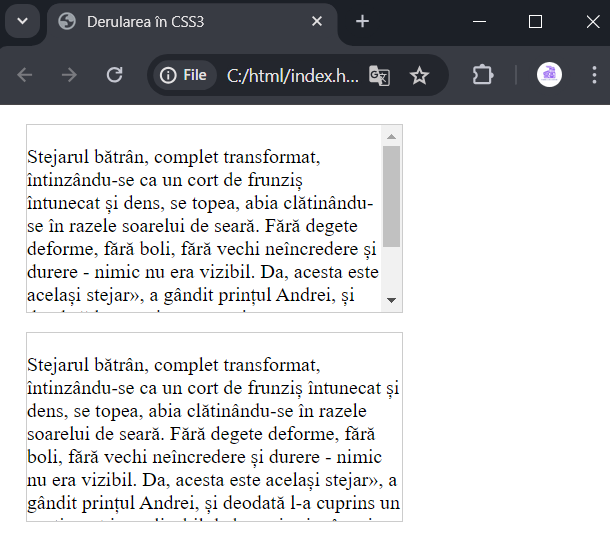

Derularea elementelor.
Proprietatea overflow permite configurarea comportamentului unui bloc în situația
în care conținutul depășește dimensiunile
definite ale blocului, adăugând posibilitatea de derulare.
Această proprietate poate avea următoarele valori:
-
auto: dacă conținutul depășește limitele
blocului, se creează bare de derulare. În alte cazuri,
barele de derulare nu sunt afișate.
-
hidden: se afișează doar partea vizibilă a
conținutului. Conținutul care depășește
limitele blocului nu este afișat, iar barele de derulare nu sunt
create.
-
scroll: în bloc sunt afișate bare de derulare, chiar dacă
conținutul se încadrează în limitele blocului
și astfel de bare de derulare nu sunt necesare.
-
visible: valoarea implicită, conținutul este afișat, chiar
dacă depășește limitele blocului.
Să examinăm aplicarea a două valori:
|
<!DOCTYPE html>
<html>
<head>
<meta charset="utf-8">
<title>Derularea în CSS3</title>
<style>
.article1{
width: 300px;
height: 150px;
margin:15px;
border: 1px solid #ccc;
overflow: auto;
}
.article2{
width: 300px;
height: 150px;
margin:15px;
border: 1px solid #ccc;
overflow: hidden;
}
</style>
</head>
<body>
<div class="article1">
<p>Stejarul bătrân, complet transformat,
întinzându-se ca un cort de frunziș
întunecat și dens, se topea, abia
clătinându-se în razele soarelui de seară.
Fără degete deforme, fără boli, fără
vechi neîncredere și durere - nimic nu era vizibil. Da,
acesta este același stejar», a gândit
prințul Andrei, și deodată l-a cuprins un sentiment
inexplicabil de bucurie și reînnoire de
primăvară.</p>
</div>
<div class="article2">
<p>Stejarul bătrân, complet transformat,
întinzându-se ca un cort de frunziș
întunecat și dens, se topea, abia
clătinându-se în razele soarelui de seară.
Fără degete deforme, fără boli, fără
vechi neîncredere și durere - nimic nu era vizibil. Da,
acesta este același stejar», a gândit
prințul Andrei, și deodată l-a cuprins un sentiment
inexplicabil de bucurie și reînnoire de
primăvară.</p>
</div>
</body>
</html>
|

Proprietatea overflow controlează barele de derulare atât pe verticală,
cât și pe orizontală. Cu ajutorul
proprietăților suplimentare overflow-x și overflow-y se poate defini derularea pe orizontală și, respectiv,
pe verticală. Aceste proprietăți acceptă
aceleași valori ca și overflow:
|
overflow-x: auto;
overflow-y: hidden;
|